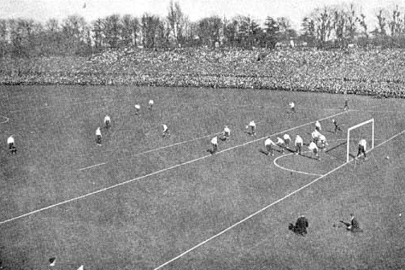
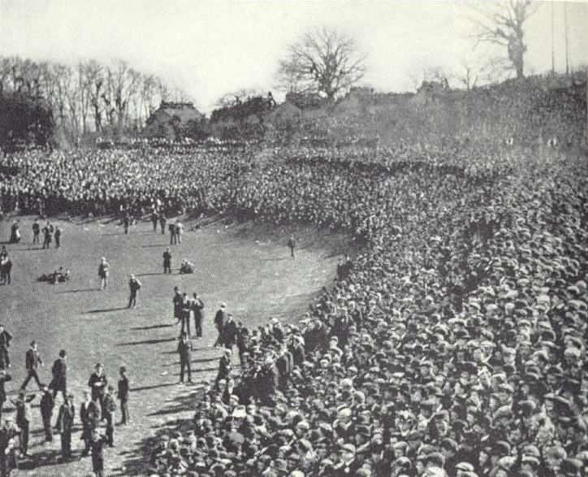
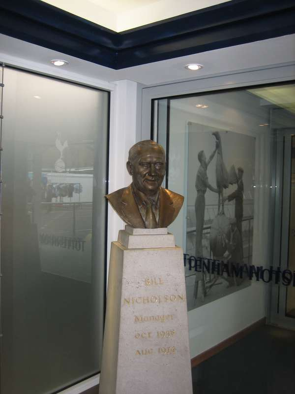
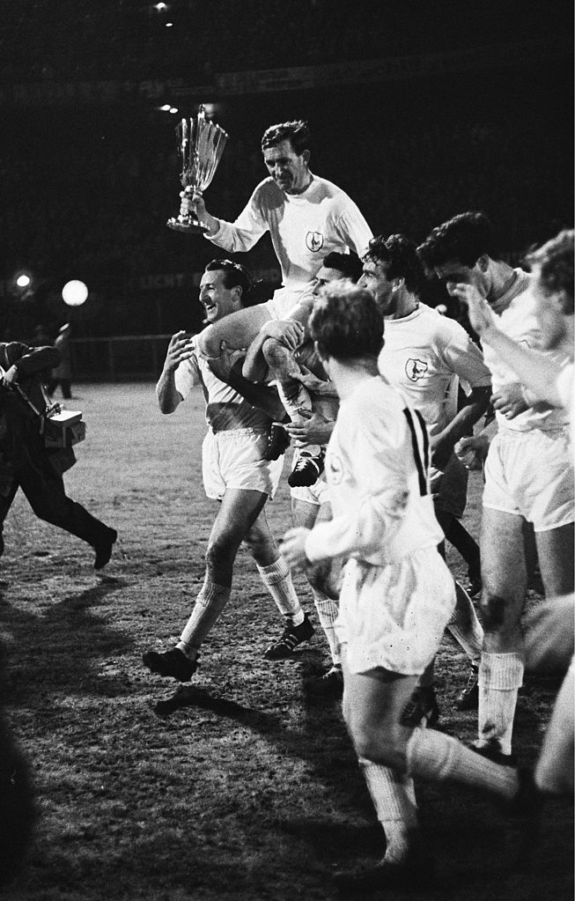
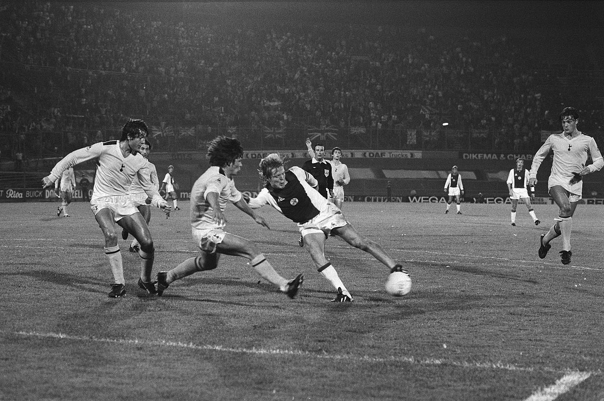
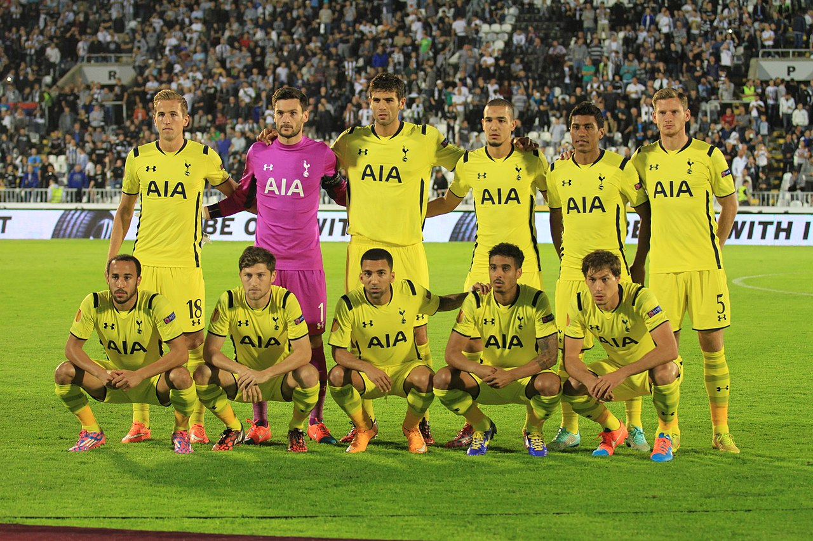
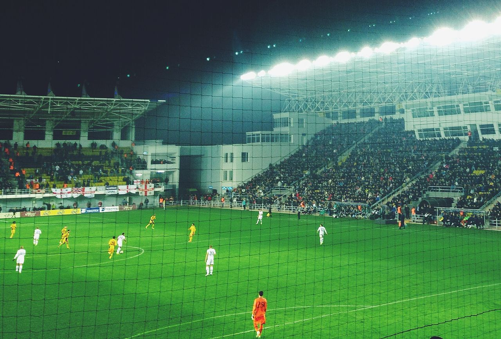

История клуба «Тоттенхэм Хотспур»
«Тоттенхэм Хотспур» — английский профессиональный футбольный клуб из Тоттенема, боро Харинги на севере Лондона. Выступает в Премьер-лиге, высшем дивизионе в системе футбольных лиг Англии. Основан в 1882 году. Прозвище клуба — «шпоры» (англ. Spurs). Домашние матчи проводит на одноимённом стадионе.
«Тоттенхэм Хотспур» стал первым клубом в XX веке, сделавшим домашний «дубль», выиграв и чемпионат, и Кубок Англии в сезоне 1960/1961. В 1963 году «шпоры» стали первым британским клубом, выигравшим европейский кубок — Кубок обладателей кубков УЕФА. В 1980-е годы «шпоры» выиграли несколько трофеев: дважды Кубок Англии, Суперкубок Англии, Кубок УЕФА (1983/1984).
«Тоттенхэм» традиционно соперничает с ближайшим соседом, «Арсеналом»: матчи между этими двумя командами называют «северолондонским дерби».
Основание клуба
История клуба «Тоттенхэм Хотспур» началась 5 сентября 1882 года. Несколько учеников одной из местных школ решили основать свою футбольную команду. Они были членами крикетного клуба, но крикетный сезон уже кончался. Первоначально команда называлась «Хотспур» в честь сэра Генри Перси по прозвищу Хотспур, которое он получил за вспыльчивый нрав. Офис клуба находился в Ассоциации молодых христиан. С 1884 года клуб получил своё нынешнее название: оно было изменено для того, чтобы клуб не путали с другой командой — «Лондон Хотспур».
1887—1919. Становление клуба
Первый официально зарегистрированный матч «Тоттенхэм» провёл против клуба «Дайал Сквер» — предка будущего «Арсенала». Встреча так и не закончилась из-за сумерек, но на момент окончания игры счёт был 2:1 в пользу «Тоттенхэма». А первый официальный матч на первенство Англии состоялся 24 сентября 1892 года в первенстве Южного альянса. Был побеждён «Политехник» со счётом 2:1. В 1899 году «шпоры» переехали на «Хай Роуд» (в дальнейшем это место стало называться «Уайт Харт Лейн»).
Спустя год, команда выиграла Кубок Южной лиги, который позволил «Тоттенхэму» сыграть в Кубке Англии, где в финале их соперником стал «Шеффилд Юнайтед». На стадион «Кристал Пэлас» было продано 114 815 билетов. На 11-й минуте «Шеффилд» открыл счёт, но нападающий «шпор» Александр Браун его сравнял. На 50-й минуте тот же Браун вывел лондонцев вперёд, но через минуту «Шеффилд» забил очень спорный гол: после прострела в исполнении Криста вратарь «шпор» выронил мяч из рук. Судья на линии посчитал, что нужно назначить угловой, но судья Кингскотт засчитал гол. Матч завершился ничьей со счётом 2:2, и по регламенту, для определения победителя назначалась переигровка. Второй матч проходил в Болтоне. «Тоттенхэм» пропустил первым, но отыгрался и выиграл — 3:1. В порыве чувств, когда капитану команды Джонсу вручали кубок, жена директора клуба повязала на кубок несколько разноцветных ленточек. С тех пор это стало традицией.
В 1908 году «Тоттенхэм» попал во второй дивизион вместо «Сток Сити» и сразу занял второе место, выйдя в первый дивизион. Там он занял 15-е место (из 20), но выиграл матчи у серебряного призёра «Ливерпуля» — 1:0 и победил бронзового призёра «Блэкберн Роверс» — 4:0. В 1915 году «Тоттенхэм» занял последнее место и вылетел во второй дивизион, но из-за начавшейся Первой мировой войны матчи не проводились.
По окончании войны, в 1919 году формировался заново первый дивизион, и одним из нововведений стало увеличение количества участников с 20 до 22. Логично было оставить в лиге и победителей 2 дивизиона. С трёмя командами так и поступили, а место «шпор» отдали «Арсеналу», который до войны был лишь 5-м во втором дивизионе. По одной из версий, это произошло из-за знакомства владельца «Арсенала» с главой футбольной ассоциации Англии.
Финальный матч Кубка Англии 1901 года
Переигровка Кубка Англии в Болтоне
1919—1948
В 1920 году «Тоттенхэм» выиграл второй дивизион, поставив несколько рекордов. Кроме этого, команда одержала победу в Кубке Англии, обыграв в финале «Вулверхэмптон Уондерерс». Следующий сезон команда завершила на 6 месте в турнирной таблице, а затем стала серебряным призёром. В период с 1923 по 1927 года «шпоры» занимали дважды 12, 13 и 15 места соответственно.
В 1928 году «Тоттенхэм» вылетел из второго дивизиона, куда вернулся спустя пять лет. В первом сезоне команда стала третьей, а в следующем году стала последней, из-за чего вылетела в третий дивизион.
1949—1958
Подъём команды связан с именем Артура Роува, который возглавил клуб в 1949 году. Он стал известен как изобретатель тактики «бей-беги», согласно которой игрок, приняв мяч, должен был быстро отдать его партнёру и бежать на свободное место, ожидая ответного паса. К такой тактике английские клубы оказались не готовы, и в 1950 году «Тоттенхэм» выиграл второй дивизион, выйдя в высшую лигу.
Команда неуверенно стартовала, но затем одержала семь побед подряд. Ключевым стал матч 18 ноября 1950 года с тогда лидировавшим «Ньюкасл Юнайтед». «Тоттенхэм» выиграл с разгромным счётом — 7:0. В том сезоне команда одержала победу в чемпионате, став чемпионом Англии. В следующем сезоне успех едва не был повторён: команда заняла второе место, уступив четыре очка чемпиону — «Манчестер Юнайтед».
Относительно начала 50-х годов, результаты команды становились скромнее. Это было связано с тем, что тактику игры переняли и другие клубы Англии. «Тоттенхэм» занял сначала 10-е, а затем и 16-е место. Роув пытался встряхнуть команду, но у него этого не получилось. В 1954 году у тренера случилось тяжёлое нервное расстройство, из-за чего он покинул свой пост. Команду возглавил Джимми Андерсон, под руководством которого команда стала двукратным чемпионом Англии.
1958—1974. Эпоха Билла Ника
В 1958 году команду возглавил Билл Николсон. Он сменил на этом посту Джимми Андерсона. Уже в первом матче был обыгран «Эвертон» — 10:4. Николсону удалось сохранить прописку в высшем дивизионе, а в следующем сезоне выиграть бронзовые медали чемпионата. На этом тренер решил не останавливаться, но для этого было необходимо усилить состав. Для достижения поставленных целей были куплены три шотландских игрока: Дейв Макай, Билл Браун и Джон Уайт, а в конце 1961 года в клуб перешёл один из сильнейших игроков того времени — Джимми Гривз. Сумма трансфера составила 99 999 фунтов.
Результаты не заставили себя долго ждать: «Тоттенхэм» выиграл чемпионат Англии 1961 года. Уже на старте команда выдала серию из 11 победных матчей подряд. В дальнейшем «Тоттенхэм» поставил ещё несколько рекордов первого дивизиона: разность забитых и пропущенных мячей (115-55; +60), 31 победа в чемпионате, 16 из которых — в гостях. Клуб выиграл и Кубок Англии того года. В финале был побеждён «Лестер Сити». В первом тайме «Лестер» остался вдесятером из-за травмы защитника Чалмерса, из-за чего перестроил свою схему и стал играть от обороны. На 38-й минуте из-за офсайда был отменён гол игрока «шпор» Клиффа Джонса. Во втором тайме Бобби Смит и Терри Дайсон забили два мяча, принеся своему клубу Кубок Англии и «золотой дубль».
Благодаря этому успеху клуб стартовал в Кубке европейских чемпионов, где уже в первом матче по итогам первого тайма проигрывал со счётом 0:4 «Гурнику» из Забже. В перерыве Николсон успокоил команду, благодаря чему лондонцы сократили отставание до двух мячей — 2:4. В ответном матче, состоявшемся в Лондоне, «Гурник» был разгромлен со счётом 8:1. В дальнейшем были обыграны «Фейеноорд» (3:1, 1:1) и «Дукла» (0:1, 4:1). Соперником по полуфиналу стала «Бенфика»: в Лиссабоне победу одержала португальская команда — 3:1, причём два гола англичан не были засчитаны из-за положения «вне игры». В ответном матч «Тоттенхэм» выиграл со счётом 2:1, но по сумме двух матчей в финал прошла «Бенфика».
В 1962 году «шпоры» завоевали бронзовую медаль и два кубка — Англии (в финале побеждён «Бернли» — 3:1) и Кубок обладателей кубков.
Год спустя, команда стала серебряным призёром чемпионата (отрыв от чемпиона — «Эвертона» составил 6 очков). В Кубке обладателей кубков клуб вылетел на первой стадии (2:0 и 1:4 с «Манчестер Юнайтед»). Ключевые игроки клуба — Бланчфлауэр, Макай и Уайт завершили свои карьеры (послоедний погиб в результате удара молнии), из-за результаты «Тоттенхэма» стали ухудшаться. Ввиду этого, были приобретены новые игроки — вратарь Пат Дженнингс, защитники Майк Ингленд и Сирил Ноулз, полузащитник Алан Мёллери. С новой командой Николсон стал бронзовым призёром чемпионата (уступив серебряным призёрам — «Ноттингем Форест» по соотношению забитых и пропущенных мячей), а также выиграл Кубок Англии. В финале была обыграна другая лондонская команда «Челси» — 2:1.
В 1971 году, победив «Астон Виллу», клуб выиграл первый в истории клуба Кубок Футбольной лиги, который дал ему возможность участвовать в Кубке УЕФА.
В полуфинале Кубка УЕФА «шпоры» проводили двухматчевое противостояние с «Миланом». Дома лондонцы пропустили первыми, но отыгрались и в итоге победили. В ответной встрече, состоявшейся в Милане, Алан Меллери открыл счёт, после чего хозяева сравняли его, но дальше прошёл «Тоттенхэм». В финале команда одержала победу над «Вулверхэмптон Уондерерс». Как обладатель Кубка УЕФА, «шпоры» приняли участие в следующем его розыгрыше. В новом сезоне Кубка «Тоттенхэм» дошёл до полуфинала, где проиграл «Ливерпулю», также представлявшему Англию. В 1973 году, во второй раз победив в Кубке лиги, клуб вновь стартовал в Кубке УЕФА. «Тоттенхэм» добрался до финала, где встретился с «Фейеноордом». первый матч завершился ничьей со счётом 2:2. Ответный матч в Роттерадме команда проиграла со счётом 0:2, а его фанаты учинили массовые беспорядки в городе. Они начались ещё до стартового свистка арбитра. Более двухсот болельщиков голландского клуба получили ранения. После этого матча в отставку ушёл главный тренер команды, Билл Николсон.
Бюст Билла Николсона
1963 год, Дэнни Бланчфлауэр с Кубком обладателей кубков
1974—1991
Новым главным тренером Николсон хотел видеть своего бывшего игрока, Кита Баркиншоу. Но руководство «Тоттенхэма» назначило новым тренером Терри Нейла из «Арсенала». Узнав об этом, Николсон забрал свои вещи с «Уайт Харт Лейн». Под руководством нового тренера «Тоттенхэм» за два сезона покинул первый дивизион. В 1976 году Нейла отправили в отставку, а на его место пришёл Баркнишоу, который вернул клуб обратно.
Перед началом сезона 1978/79 «шпоры» купили двух чемпионов мира — аргентинцев Освальдо Ардилеса и Рикки Вилью. Это приобретение стало одним из самых известных в английском футболе.
1980-е годы клуб начал с победы в Кубке Англии 1981 года над «Манчестер Сити» (Вилья забил дважды). Через три года был выигран другой трофей — Кубок УЕФА, обыграв в финале бельгийский «Андерлехт». Во втором финальном матче у себя дома «шпоры» отыгрались после гола Алекса Чернятински (лишь на 84-й минуте гол забил Грэм Робертс). В серии пенальти победу одержал «Тоттенхэм».
За несколько недель до победы в Кубке УЕФА, Баркиншоу объявил о своей отставке. «Шпоры» потеряли тренера, который вновь сделал «Тоттенхэм» успешным. Новым тренером стал Питер Шривес, а президентом — Ирвин Сколар. В первом сезоне Шривесу удалось удержать клуб в первой тройке, но затем у команды начался спад, из-за чего произошла смена тренера. В 1986 году клуб возглавил Дэвид Плит. После проигрышей в полуфинале Кубка Лиги и в Кубке Англии, осенью 1987 года Плит ушёл в отставку. Клуб возглавил Терри Венейблс, который выиграл бронзовые медали чемпионата 1990 года и Кубок Англии год спустя.
В 1990 году из-за краха на рынке недвижимости президент Сколар был на грани банкротства. В скором времени клубом стали управлять пришедшие ему на смену Венейблс и бизнесмен Алан Шугар.
Ключевые игроки «шпор» начала 80-х: Стив Перриман, Освальдо Ардилес и Гленн Ходдл
1992—2001. Первые годы в Премьер-лиге
Первый сезон «Тоттенхэм» в Премьер-Лиге завершил на 8-м месте, после чего Венейблс был исключён из правления клуба после договорённости с Шугаром. Новым тренером клуба стал Освальдо Ардилес. В межсезонье были куплены такие игроки, как: Юрген Клинсман, Тедди Шерингем, Даррен Андертон, Илие Думитреску и Ник Бармби. В связи с большими тратами на трансферы, от игроков ждали мгновенного результата — но как итог, 15-е место в сезоне 1993/94. В связи с такими результатами Ардилеса отправили в отставку.
По окончании сезона разразился скандал по поводу незаконных зарплат игрокам. Последовало наказание: снятие 12 очков (в таком случае клуб расположился на 21-е месте) и дисквалификация на один год в Кубке Англии, плюс штраф в размере 600 тысяч фунтов. Шугар подал протест, и после его рассмотрения санкции были отменены.
Новым главным тренером стал Джерри Фрэнсис. При нём команда заняла 7-е место, что дало ей право играть в Кубке Интертото, и вышла в полуфинал национального кубка. В Кубке Интертото «шпоры» заняли предпоследнее место в группе, а в полуфинале Кубка Англии проиграли «Эвертону» со счётом 1:4. После этого, в 1996 и 1997 годах клуб занял 8 и 10 место соответственно.
Сезон 1997/1998 клуб начал с серии, которая привела к тому, что команда находилась на 18 строчке в турнирной таблице, после чего Фрэнсиса уволили. Новым тренером стал Кристиан Гросс, которому удалось спасти команду от вылета. В следующем сезоне тренера уволили по истечении трёх туров чемпионата. Ему на смену пришёл Джордж Грэм, ранее работавший в составе принципиального соперника «Тоттенхэма» — «Арсенале». Несмотря на протесты болельщиков, связанные с прошлым местом работы Грэма, клуб выиграл Кубок лиги, обыграв в финале «Лестер Сити», и дошёл до полуфинала Кубка Англии. В связи с показанными результатами команды, руководство оставило Джорджа. Ключевую роль в команде занимал Давид Жинола, признанный лучшим футболистом Англии сразу в двух опросах.
С 2001 года. Эпоха Даниэля Леви
В 2001 году Даниэл Леви стал президентом, а Гленн Ходдл — новым тренером «Тоттенхэма». Первая игра под его руководством закончилась победой над «Арсеналом» в полуфинале Кубка Англии. При нём в составе играли в основном опытные игроки — Тедди Шерингэм, Густав Пойет и Кристиан Циге. Через некоторое время, с помощью этой тактики, «Тоттенхэм» начал демонстрировать зрелищный футбол. В сезоне 2001/02 клуб финишировал девятым и добрался до финала Кубка лиги, где уступил «Блэкберн Роверс» со счётом 1:2. Следующий сезон начался для команды с побед, и к концу февраля «Тоттенхэм» был в шестёрке лидеров. Набрав 7 очков в последних 10 играх, клуб спустился на несколько строчек таблицы и финишировал десятым. Некоторые игроки начали публично критиковать систему управления и навыки общения Гленна Ходдла. После начала сезона 2003/04, в котором команда набрала 4 очка в 6 встречах, Ходдл был уволен. Дэвид Плит исполнял обязанности тренера до конца сезона и вывел команду на 14-е место. В мае 2004 года «Тоттенхэм» пригласил француза Жака Сантини на пост главного тренера. Сантини покинул клуб по неизвестным обстоятельствам после 13 игр. Место тренера занял его помощник, Мартин Йол. По ходу сезона 2005/06 «Тоттенхэм» провёл большую часть сезона на 4 месте, дающее право участия в Лиге Чемпионов, но финишировали пятыми. Тем не менее, клуб завоевал место в Кубке УЕФА. В сезоне 2006/07 «шпоры» снова финишировали пятыми. После неудачного старта в следующем сезоне, Йол был отправлен в отставку. Новым тренером стал Хуанде Рамос, который в феврале 2008 года выиграл Кубок лиги, обыграв в финале «Челси». В конце осени того же года, после провала на старте чемпионата, тренер был отправлен в отставку.
26 октября 2008 года ему на смену пришёл руководитель «Портсмута», Харри Рэднапп. В этот же день «Тоттенхэм» встречался с «Болтон Уондерерс» и одержал свою первую победу в Премьер-лиге в текущем сезоне — 2:0. Зимой был сделан ряд покупок — вернулись Робби Кин, Паскаль Шимбонда, и были куплены Карло Кудичини из «Челси» и Уилсон Паласиос из «Уиган Атлетик». В течение сезона клуб покинул зону вылета, а по его итогам расположился на восьмом месте. В летнее межсезонье Харри Реднапп принялся за усиление команды, купив Кайла Нотона и Кайла Уокера из «Шеффилд Юнайтед», Себастьяна Бассонга из «Ньюкасл Юйнатед», Питера Крауча и Нико Кранчара из «Портсмута». Сезон 2009/10 «шпоры» начали с четырёх побед подряд. По итогам месяца лучшим тренером был признан Харри Реднапп, лучшим игроком — Джермейн Дефо. В зимнее трансферное окно в клуб вернулся ещё один бывший игрок «шпор» — Юнес Кабул, а также на правах аренды клуб пополнил Эйдур Гудьонсен.
14 апреля 2010 года «Тоттенхэм» добился первой победы в Премьер-Лиге за последние 11 лет над свои принципиальным соперником, «Арсеналом», со счётом 2:1. Спустя 3 дня, «Тоттенхэм» обыграл с тем же счётом «Челси», серьёзно повысив свои шансы на желанную четвёртую строчку, дающую право выступать в Лиге чемпионов со следующего сезона. 5 мая «Тоттенхэм» в гостях победил с минимальным счётом своего главного конкурента, «Манчестер Сити», впервые в своей истории получив путёвку в квалификационный раунд Лиги чемпионов. Достижения Харри Реднаппа не остались незамеченными, и по итогам сезона он был признан тренером года в Премьер-Лиге.
Следующий сезон «шпоры», играющие на два фронта, закончили на пятом месте. Перед началом сезона команда пополнилась Вильямом Галласом и вице-чемпионом мира, Рафаэлем ван дер Ваартом. В групповом раунде Лиги чемпионов команда заняла первое место, обогнав «Интернационале», «Твенте» и «Вердер». В 1/8 финала был обыгран «Милан», однако в следующем раунде последовало поражение «Реала», победившего с общим счётом 5:0. Таким образом, был установлен антирекорд Лиги чемпионов по самому крупному поражению в плей-офф по сумме двух встреч для английских клубов.
Сезон 2011/12 команда закончила на четвёртом, лигочемпионском месте, однако «Челси», занявший 6-е место в чемпионате, выиграл финал Лиги Чемпионов у «Баварии», тем самым автоматически обеспечив себе участие в Лиге на следующий сезон. Из-за этого «Тоттенхэм» выбыл из турнира, не сыграв в нём ни одного матча и получил право играть в Лиге Европы. Перед началом нового сезона в клубе произошла смена тренера: вместо Харри Реднаппа, тренировавшего клуб более трёх лет, ему на смену пришёл Андре Виллаш-Боаш, ранее тренировавший «Порту» и «Челси». Также команду покинули завершивший карьеру Лэдли Кинг, Стивен Пинар, а также Лука Модрич и Нико Кранчар, перешедшие в мадридский «Реал» и киевское «Динамо» соответственно.
В сезоне 2012/2013 «шпоры» под руководством Виллаш-Боаша заняли 5-е место, вновь пропустив вперёд «Арсенал». После долгих переговоров команду покинул её лидер Гарет Бэйл — сумма трансфера валлийца составила порядка 86 миллионов фунтов. Тем летом «шпоры» приобрели на деньги, вырученные с продажи Бейла, полузащитника Паулиньо из «Коринтианса» за 17 миллионов фунтов, нападающего Сольдадо из «Валенсии» за 26 миллионов фунтов, нападающего Ламелу из «Ромы» за 30 миллионов фунтов, хавбеков Эриксена из «Аякса» за 11,25 миллионов фунтов, Шадли из «Твенте» за 7 миллионов фунтов и Капу из «Тулузы» за 9 миллионов фунтов, а также защитника Кирикеша из «Стяуа» за 8,5 миллиона фунтов. Позже президент «Тоттенхэма» Дэниел Леви назвал эти покупки пустой тратой денег. В сезоне 2013/2014 Виллаш-Боаш был уволен после разгромного поражения от «Ливерпуля» со счётом 0:5 на «Уайт Харт Лейн», и главным тренером команды был назначен Тим Шервуд, при котором «Тоттенхэм» занял 6-е место.
2014—2019. Тренерство Маурисио Почеттино
13 мая 2014 года Тим Шервуд был отправлен в отставку. «С Тимом было заключено соглашение на 18 месяцев с возможностью расторжения договора в конце сезона, и сейчас мы воспользовались этой опцией», — написал на сайте «Тоттенхэма» президент клуба Дэниэл Леви. Шервуд заявил, что «многому научился за этот период» и «не упал с кресла, когда сообщили об увольнении, но был разочарован тем, что лишился работы».
Спустя две недели, 27 мая 2014 года, «Тоттенхэм» объявил о назначении экс-тренера «Эспаньола» и «Саутгемптона», 42-летнего аргентинца Маурисио Почеттино на пост наставника команды. Контракт был рассчитан сроком на пять лет. Дэниэл Леви заявил, что «в лице Маурисио мы получили главного тренера, который со своей высокой энергетикой и атакующим футболом будет исповедовать такой же стиль игры в нашем клубе. Он доказал, что имеет способность как развивать лучшие качества каждого игрока, так и прививать командный дух и менталитет победителей футболистам». Перед стартом сезона 2014/15 «Тоттенхэм» укрепил оборонительную линию, приобретя голкипера Мишеля Ворма, защитников Федерико Фасио, Бена Дэвиса, Эрика Дайера, Деандре Йедлина и опорного хавбека Бенжамена Стамбули, на сумму, превышающую £35,5 млн. При этом клуб расстался с Сандро, Гильфи Сигурдссоном, Джейком Ливермором, Зеки Фрайерсом, Яго Фальке, Джонатаном Обикой и капитаном Майклом Доусоном. Немецкий атакующий полузащитник Льюис Холтби был отправлен в годичную аренду в «Гамбург». Команда Почеттино начала сезон с двух побед — над «Вест Хэм Юнайтед» и «Куинз Парк Рейнджерс», но затем последовала череда ничьих, выигрышей с преимуществом в один мяч и нескольких поражений, в том числе трёх разгромов — от «Ливерпуля», «Манчестер Сити» и «Челси». К «Boxing Day» команда подошла на 7-м месте в турнирной таблице. 1 января 2015 года дома «Тоттенхэм» обыграл «Челси» со счётом 5:3, что позволило выйти на 5-е место в чемпионате и вернуть положительную разницу забитых и пропущенных мячей. Команда продолжила неровные выступления до конца сезона, так и оставшись в итоге на 5 месте, во многом благодаря Гарри Кейну — на его счету оказался 31 гол, из которых 21 был забил в Премьер-лиге, и 7 в Лиге Европы. Из второго турнира команда вылетела на стадии 1/16 финала, проиграв «Фиорентине». Кейн получил награду молодого игрока года, что ранее удавалось сделать другим игрокам «Тоттенхэма» — Кайлу Уокеру в сезоне 2011/12 и Гарету Бейлу сезоном позже.
В сезоне 2015/2016 «Тоттенхэм» боролся за место в Лиге чемпионов, перед началом которого расстался с рядом игроков. В Лиге Европы команда вышла из группы с первого места, после чего в 1/16 финала вновь встретился с «Фиорентиной». Первый матч в Италии завершился ничьей со счётом 1:1, в ответной встреч лондонцы одержали победу со счётом 3:0. На следующей стадии «Тоттенхэму» досталась дортмундская «Боруссия», которой «Тоттенхэм» проиграл с общим счётом 1:5 и выбыл из турнира. В следующем сезоне команда стала серебряным призёром чемпионата Англии, уступив «Челси» 7 очков. Лучшим бомбардиром чемпионата стал Харри Кейн с его 29 голами. Лучшим молодым игроком АПЛ стал Деле Алли, на счету которого 18 голов и 7 голевых передач.
В сезоне 2018/2019 «Тоттенхэм», заняв по итогам предыдущего сезона 3-е место в АПЛ, принял участие в Лиге чемпионов УЕФА. Попав в группу «B» с «Барселоной», «Интернационале» и «ПСВ», выступал в ней не лучшим образом и вышел из группы, перегнав «Интер» лишь благодаря забитым мячам. На стадии 1/8 финала «Тоттенхэм» столкнулся с «Боруссией» из Дортмунда и уверенно победил с общим счётом 4:0. Матч четвертьфинала выдался гораздо более проблемным − в соперники достался «Манчестер Сити». Домашний матч оказался удачным для «Тоттенхэма» − 1:0, ответный команда проиграла 3:4, однако прошла дальше. В полуфинале соперником оказался «Аякс» из Амстердама, уже выбивший из розыгрыша мадридский «Реал» и «Ювентус». «Тоттенхэму» с трудом, но всё же удалось пройти дальше, победив в выездном матче со счётом 3:2 благодаря хет-трику Лукаса Моуры. Финал Лиги чемпионов, прошедший на стадионе «Метрополитано» в Мадриде, завершился для команды поражением от «Ливерпуля» со счётом 0:2. По итогам же сезона Чемпионата Англии 2018/2019, «Тоттенхэм» занял 4-ю позицию в таблице и тем самым обеспечил себе участие в Лиге чемпионов УЕФА 2019/20.
Матч Лиги Европы 2013/14 против «Шерифа» в Тирасполе
С 2019 года. Тренерство Жозе Моуринью
20 ноября 2019 года главным тренером клуба был назначен 56-летний португалец Жозе Моуринью, подписавший контракт до конца сезона 2022/23.
19 апреля 2021 года отправлен в отставку из-за неудовлетворительных результатов.